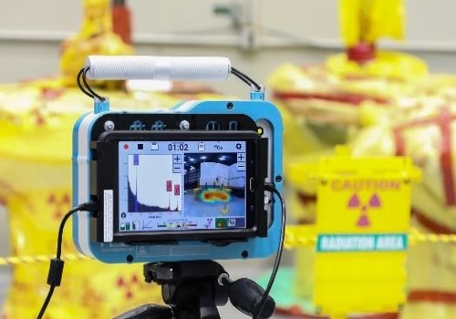
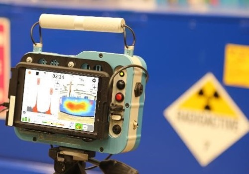

Gamma-ray Imaging Spectrometer
3-D Position Sensing 기술을 이용한 실시간 방사선 이미징 장치인 POLARIS Series 검출기는 우수한 에너지 분해능과 자동화된 스펙트럼 분석으로 방사선의 종류와 세기를 정확하게 판별하는 최첨단의 상온반도체 방사선 검출기입니다. 볼 수 없는 감마선 (invisible gamma-ray)을 실시간으로 시각화하여 방사선 작업자가 방사선 위험에 효과적으로 대처할 수 있도록 직관적인 정보를 제공합니다.
방사선 안전의 새로운 패러다임을 제시합니다.
3-D Position Sensing 기술을 이용한 실시간 방사선 이미징 장치인 POLARIS Series 검출기는 우수한 에너지 분해능과 자동화된 스펙트럼 분석으로 방사선의 종류와 세기를 정확하게 판별하는 최첨단의 상온반도체 방사선 검출기입니다. 볼 수 없는 감마선 (invisible gamma-ray)을 실시간으로 시각화하여 방사선 작업자가 방사선 위험에 효과적으로 대처할 수 있도록 직관적인 정보를 제공합니다.
3-D Position Sensing Technology
3-D Position Sensing 기술을 이용한 실시간 방사선 이미징 장치인 POLARIS Series 검출기는 우수한 에너지 분해능과 자동화된 스펙트럼 분석으로 방사선의 종류와 세기를 정확하게 판별하는 최첨단의 상온반도체 방사선 검출기입니다. 볼 수 없는 감마선 (invisible gamma-ray)을 실시간으로 시각화하여 방사선 작업자가 방사선 위험에 효과적으로 대처할 수 있도록 직관적인 정보를 제공합니다.
